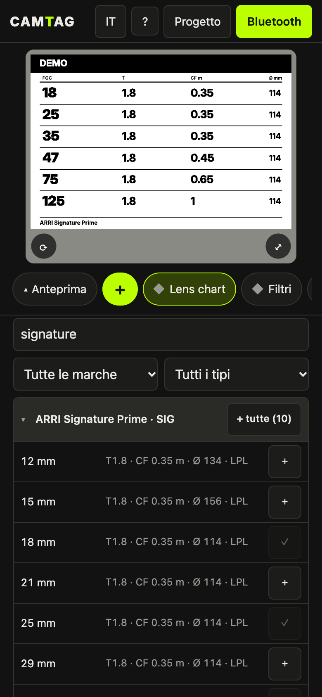
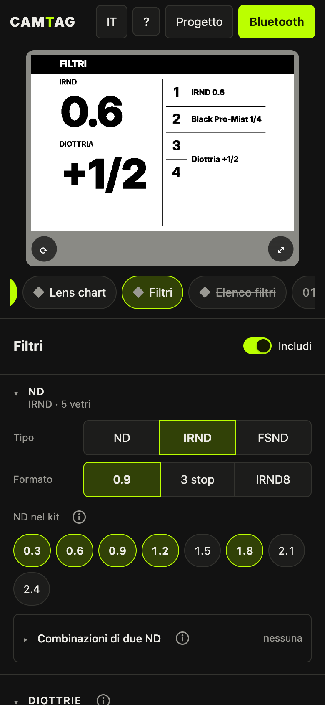
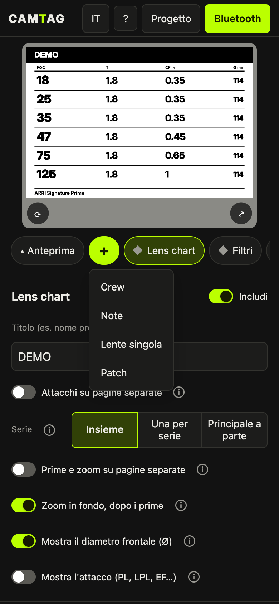
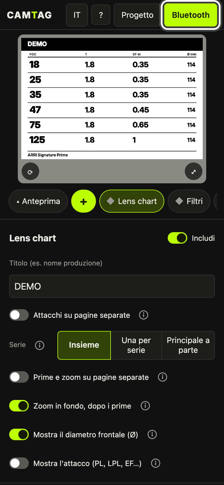
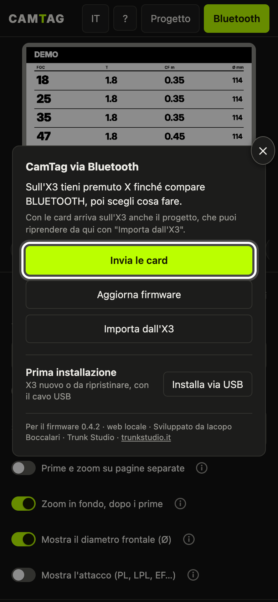
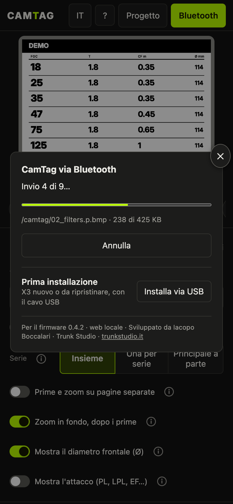
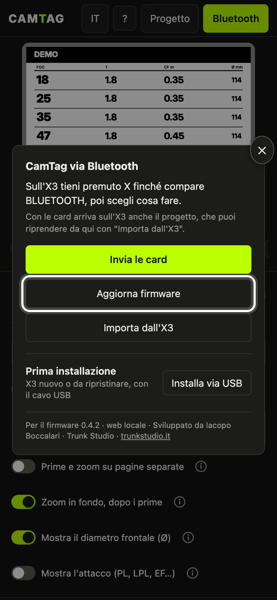
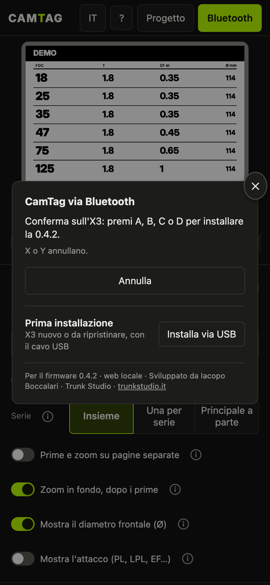

CamTag sulla camera
Il badge e-paper del reparto camera: lens chart, filtri, crew e note sempre in vista, anche da spento. Qui trovi come preparare le card, i tasti, quando premerli e cosa vedrai sullo schermo.
Il firmware dell'X3 si aggiorna via Bluetooth dal configuratore web, senza cavo e senza computer (Aggiornare il firmware).
In breve
Tutto quello che serve sul set, in una pagina. I dettagli sono nelle sezioni che seguono.
XY Lati
- X
- schermata precedente
- Y
- schermata successiva
- X lungo
- ricevi le card via Bluetooth
- Y lungo
- blocca / sblocca la rotazione
PWR Power
- breve
- blocca / sblocca i tasti
- lungo 1 s
- spegne e accende
A|BC|D In basso
- lens chart
- A|B pagina indietro, C|D avanti
- filtri
- A|B diottria, C|D ND
- A o B lungo
- modifica gli stadi del mattebox
RESET Riavvio
- breve
- riavvia l'X3, se non risponde
Le card e le impostazioni restano.
I tasti
L'X3 si tiene in verticale, con i due bilancieri in basso. I nomi dei tasti valgono in questa posizione, anche quando lo ruoti.
- Power, in alto a destra: blocca i tasti, e con la pressione lunga spegne e accende.
- Reset, in alto a sinistra: riavvia.
- X sul lato sinistro e Y sul destro: cambiano schermata.
- Due bilancieri in basso, A|B a sinistra e C|D a destra: lavorano sulla schermata che hai davanti (pagine della lens chart, ND e diottria).
I bilancieri si premono un capo alla volta: A è il capo sinistro del primo, B il destro.
Pressione breve o lunga
Ogni tasto ha due gesti. La pressione breve conta quando rilasci. Quella lunga scatta da sola dopo 0,8 secondi (1 secondo per il power), con il dito ancora sul tasto: vedi subito l'effetto, e il rilascio dopo non fa altro.
| Tasto | Breve | Lunga |
|---|---|---|
| X | Schermata precedente | Ricezione via Bluetooth |
| Y | Schermata successiva | Blocca / sblocca la rotazione |
| A B | Lens chart: pagina indietro. Filtri: diottria − / + | Filtri: modifica gli stadi |
| C D | Lens chart: pagina avanti. Filtri: ND − / + | — |
| PWR | Blocca / sblocca i tasti | Spegne / accende (1 s) |
| RESET | Riavvia | — |
Accendere e spegnere
Per chi lo usa ci sono due stati: acceso, che mostra le card e risponde ai tasti, e spento, che mostra la schermata di spento.
Pressione lunga sul power (1 secondo) per spegnere. Per riaccendere, di nuovo una pressione lunga: riparte dall'ultima card. Da spento gli altri tasti non fanno nulla.
La schermata di spento la scegli nel configuratore web, nella pagina Spento (un'immagine e una scritta, come "CAMERA A"), o con una scheda qualsiasi. Senza, l'X3 mostra solo il nome CAMTAG.
- dopo 24 ore senza toccare un tasto;
- con la batteria scarica: la fascia dice BATTERIA SCARICA - METTI IN CARICA.
La prima accensione: la lingua
La prima volta che si accende, l'X3 chiede in che lingua scrivere i suoi messaggi (il riquadro senza card, la schermata Bluetooth, la fascia da spento): A o B per l'inglese, C o D per l'italiano. Le etichette sullo schermo mostrano dove sono i tasti. Finché non scegli, la domanda torna a ogni accensione.
Le card hanno la loro lingua, scelta nel configuratore web, e da lì si può cambiare anche quella dell'X3 (vedi Card via Bluetooth).
Acceso consuma poco anche senza spegnerlo
Dopo 5 secondi senza tocchi l'X3 va a riposo, ma da fuori non cambia nulla: la card resta e il primo tasto risponde come sempre. Non serve spegnerlo tra un'inquadratura e l'altra.
Da spento, dopo tre giorni lo schermo passa al bianco con la sola fascia, e da lì l'X3 non consuma più nulla. Si riaccende sempre con una pressione lunga sul power.
Sfogliare le schermate
Le schermate sono nell'ordine del configuratore web: la lens chart, i filtri, poi le schede (crew, note, lenti, immagini).
X torna alla schermata precedente, Y va alla successiva. Il giro è continuo: dopo l'ultima ricomincia dalla prima.
X e Y funzionano allo stesso modo su ogni schermata, anche sulla lens chart e sui filtri.
Lens chart di più pagine
Una lens chart con molte lenti si divide in pagine. Sulla lens chart i bilancieri sfogliano solo le sue pagine, in giro, e ognuno vale come un tasto solo: premi un capo o l'altro, è uguale.
- A|B, a sinistra: pagina indietro;
- C|D, a destra: pagina avanti.
Con l'X3 ruotato conta quello che vedi: avanza il bilanciere a destra o in basso, torna indietro quello a sinistra o in alto.
Con una sola pagina A–D non fanno nulla.
Rotazione
L'X3 sente come lo tieni e gira la schermata nei quattro versi, sempre dritta per chi la guarda.
Il cambio avviene dopo circa mezzo secondo di posizione ferma. Appoggiato in piano, l'X3 tiene il verso che aveva.
Pressione lunga su Y per bloccare la rotazione nel verso attuale; un'altra pressione lunga la sblocca. Per un momento compare ROTAZIONE BLOCCATA o ROTAZIONE AUTOMATICA. Il blocco resta anche dopo lo spegnimento.
Con la rotazione bloccata resta fermo tutto: la schermata, le indicazioni dei tasti e la funzione dei bilancieri sono quelle del verso bloccato. Sbloccando, la schermata raggiunge subito la posizione vera.
Bloccare i tasti
Sulla camera i tasti si urtano. Il blocco tiene ferma la schermata finché non lo togli.
Premi il power (breve) per bloccare: compare il lucchetto in alto, sotto il power. A–D, X e Y non fanno più nulla. Premi di nuovo il power per sbloccare.
La rotazione continua a funzionare anche con i tasti bloccati, e la pressione lunga sul power spegne come sempre. Spegnendo, il blocco si toglie.
Guarda se c'è il lucchetto: è quasi sempre il blocco dei tasti.
Schermata filtri
ND e diottria in grande, e sotto gli stadi del mattebox, dal lato lente (1) verso il fronte. Cambi ND e diottria con i bilancieri, scorrendo solo i vetri del tuo kit.
In verticale A|B cambiano la diottria e C|D l'ND. Il "+" sta sempre sul capo a destra o in alto per chi guarda.
Ogni bilanciere comanda il valore che gli sta accanto: quando ruoti l'X3 i due si scambiano, e le indicazioni sullo schermo seguono.
Nella scala dell'ND ci sono anche i totali fatti con due vetri, se li hai scelti nel configuratore web: la coppia occupa gli stadi 1 e 2.
Chi sta dove negli stadi
- L'ND occupa i primi stadi, dal lato lente.
- La diottria sta davanti a tutti gli altri vetri, di solito su due stadi.
- Gli altri vetri (diffusione, polarizzatori…) stanno in mezzo.
Gli stadi si rimettono a posto da soli quando ND e diottria restano fermi per 2 secondi: puoi scorrere i valori senza che i vetri saltino a ogni tocco.
Modificare gli stadi del mattebox
Hai cambiato un vetro sul set? Lo aggiorni dall'X3, sulla schermata filtri, senza passare dal telefono.
- Pressione lunga su A o B sulla schermata filtri. La riga del primo stadio libero va in negativo.
- A e B spostano la selezione fra gli stadi. Le righe dell'ND non si scelgono.
- C e D cambiano il vetro dello stadio: vuoto (—), poi i vetri del kit che non sono già montati. Arrivato in fondo ricomincia.
- Fatto. Dopo 5 secondi senza tocchi la modifica è accettata e si esce da soli. Per uscire subito premi X o Y, o di nuovo una pressione lunga su A o B.
- Scegliendo un vetro sulla riga della diottria, il vetro prende quel posto e la diottria avanza di uno.
- In modifica ND e diottria non cambiano, e X e Y servono solo a uscire.
- L'X3 ricorda gli stadi, come ND e diottria, anche da spento.
Preparare le card
Le card si preparano nel configuratore web, una pagina che si apre nel browser del telefono o del computer, senza installare nulla: trunk-studio-production.github.io/camtag. Qui trovi le basi; ogni opzione ha la sua spiegazione dietro la ⓘ.
Com'è fatto
- In alto l'anteprima: la schermata come uscirà sull'X3. ⟳ la gira tra orizzontale e verticale, ⤢ la apre a tutto schermo. Sul telefono si richiude e si riapre con Anteprima, il primo pulsante della striscia.
- Sotto, la striscia delle schermate: Lens chart, Filtri, Elenco filtri, le schede che aggiungi e Spento. L'ordine è quello che vedrai sull'X3 con X e Y; le schermate barrate non si mandano (si accendono con Includi).
- Più giù l'editor della schermata scelta.
- Sul computer, accanto ad Anteprima, c'è il Simulatore: provi i tasti e la rotazione come sull'X3, prima di mandare le card.
Primi passi
- Le lenti. Apri Lens chart e scrivi il titolo, di solito il nome della produzione. In Database lenti cerca marca, serie o focale (per esempio “signature 35”), tocca la serie per vedere le focali, poi + per una lente o + tutte per la serie intera. Se la serie esiste con più attacchi, ti chiede quale. Oltre le 11 lenti le pagine si dividono da sole.
- I filtri. In Filtri spunta gli ND e le diottrie del kit e aggiungi gli altri vetri dal Catalogo vetri. In Mattebox e valori di partenza scegli quanti stadi ha il mattebox e cosa c'è montato: sul set lo cambi dall'X3 (Schermata filtri, Modificare gli stadi).
- Le altre schede. Con + (sul telefono è il pulsante verde subito dopo Anteprima) aggiungi Crew, Note, Lente singola o Patch, un'immagine come un logo o un QR. Si riordinano con ↑ e ↓ in cima all'editor.
- Da spento. In Spento scegli cosa resta sullo schermo quando spegni l'X3: una scritta (un nome, un contatto) o un'immagine.
- Manda le card all'X3 con Bluetooth, come spiega la sezione successiva.



Il configuratore web salva da solo, ma solo in questo browser. Per averne una copia usa Progetto ▾ › Salva progetto, che scarica un file da riaprire con Importa progetto…. Il progetto viaggia anche con le card: lo riprendi dall'X3 con Bluetooth → Importa dall'X3.
Lingue
Nella barra del configuratore web il pulsante della lingua (EN o IT) sceglie tre cose separate: la lingua del configuratore web, quella in cui si disegnano le card e quella delle scritte dell'X3. Quest'ultima arriva all'X3 con il prossimo invio delle card; con Non cambiare l'X3 tiene quella scelta alla prima accensione. Card e X3 in lingue diverse vanno bene: l'invio funziona comunque.
Mandare le card via Bluetooth
Pronte le card nel configuratore web, arrivano all'X3 dal telefono o dal computer, senza togliere la microSD.
- Sull'X3 fai una pressione lunga su X: compare BLUETOOTH con il nome del dispositivo (per esempio CAMTAG-1A2B).
- Nel configuratore web tocca Bluetooth, poi Invia le card, e scegli quel nome.
- A fine invio l'X3 mostra la prima card con CARD AGGIORNATE.



Le card nuove sostituiscono le vecchie solo a invio completo: se il collegamento cade, sull'X3 restano quelle di prima. Le card uguali a quelle già sull'X3 non viaggiano, così un ritocco arriva in pochi secondi. X o Y escono dalla ricezione; dopo 3 minuti senza invii esce da sola.
Riprendere il progetto dall'X3
Con le card viaggia anche il progetto del configuratore web. Su un altro telefono, o se il browser ha perso il lavoro, metti l'X3 in ricezione e tocca Bluetooth → Importa dall'X3: il configuratore web riprende il progetto e le card sull'X3 non cambiano.
Aggiornare il firmware
- Metti l'X3 in ricezione (pressione lunga su X). La versione che ha è scritta in basso sulla schermata BLUETOOTH; quando ti colleghi, il configuratore web ti dice se ce n'è una più recente.
- Nel configuratore web tocca Bluetooth, poi Aggiorna firmware, e scegli il nome dell'X3.
- Sull'X3 compare AGGIORNARE IL FIRMWARE?: premi A, B, C o D per installare, X o Y per annullare.
- Tieni il telefono vicino all'X3 per mezzo minuto circa. Alla fine l'X3 si riavvia con il firmware nuovo.


Le card, il progetto e le impostazioni restano. Se non confermi entro un minuto l'X3 annulla da solo, e con la batteria sotto il 30% rifiuta l'aggiornamento: mettilo prima in carica. Se il collegamento cade a metà, o il firmware nuovo non parte, l'X3 torna da solo a quello di prima.
Funziona dalla 0.4.0 in su: un X3 con un firmware più vecchio va aggiornato una volta con il cavo USB, come spiega il README.
Con la microSD
In alternativa scarica lo zip dal configuratore web (Progetto ▾ › Scarica le card (.zip)) e copia la sua cartella camtag/ nella radice della microSD, al posto di quella che c'è.
Messaggi e stato
Quando non c'è una card da mostrare, l'X3 lo dice in un riquadro al centro dello schermo.
| Messaggio | Cosa fare |
|---|---|
| NESSUNA CARD | Fai una pressione lunga su X e mandale via Bluetooth. |
| NESSUNA MICROSD | Inserisci la microSD e premi Reset. |
| BMP NON VALIDO | Una card è rovinata: rimandale dal configuratore web. |
| CARD AGGIORNATE | Invio riuscito, nulla da fare. |
| BATTERIA SCARICA | Si è spento per la batteria: mettilo in carica. |
Con l'X3 in inglese gli stessi messaggi sono in inglese: NO CARDS, NO MICROSD, INVALID BMP, CARDS UPDATED, BATTERY EMPTY.
Batteria e cavo
In alto a destra, sopra la card, l'X3 mostra lo stato solo quando serve:
- ▭ 15% la batteria, quando scende sotto il 20% o è in carica;
- ϟ il fulmine, mentre si carica;
- USB la linguetta USB, quando è collegato a un computer.
Da spento la percentuale rimasta è sulla schermata di spento. La carica si ferma da sola a batteria piena.
Se qualcosa non va
| Succede che… | Prova così |
|---|---|
| I tasti non fanno nulla | C'è il lucchetto? Premi il power. Se mostra la schermata di spento, accendilo con una pressione lunga sul power (1 s). |
| La schermata non ruota | La rotazione è bloccata: sbloccala con una pressione lunga su Y. |
| A–D non fanno nulla | È normale fuori dalla lens chart e dai filtri, e su una lens chart di una sola pagina. |
| Il telefono non trova l'X3 | Metti l'X3 in ricezione (pressione lunga su X) prima di toccare "Invia le card", e usa un browser con il Bluetooth. |
| L'aggiornamento del firmware non parte | L'X3 deve essere in ricezione e la batteria sopra il 30% (o in carica). Sull'X3 conferma con A, B, C o D entro un minuto. |
| All'accensione chiede la lingua | Succede finché non ne scegli una: A o B per l'inglese, C o D per l'italiano. |
| L'X3 scrive nella lingua sbagliata | Nel configuratore web: pulsante EN/IT → Scritte dell'X3, scegli la lingua e invia di nuovo le card. |
| Non risponde per niente | Premi Reset, in alto a sinistra. Le card restano. |